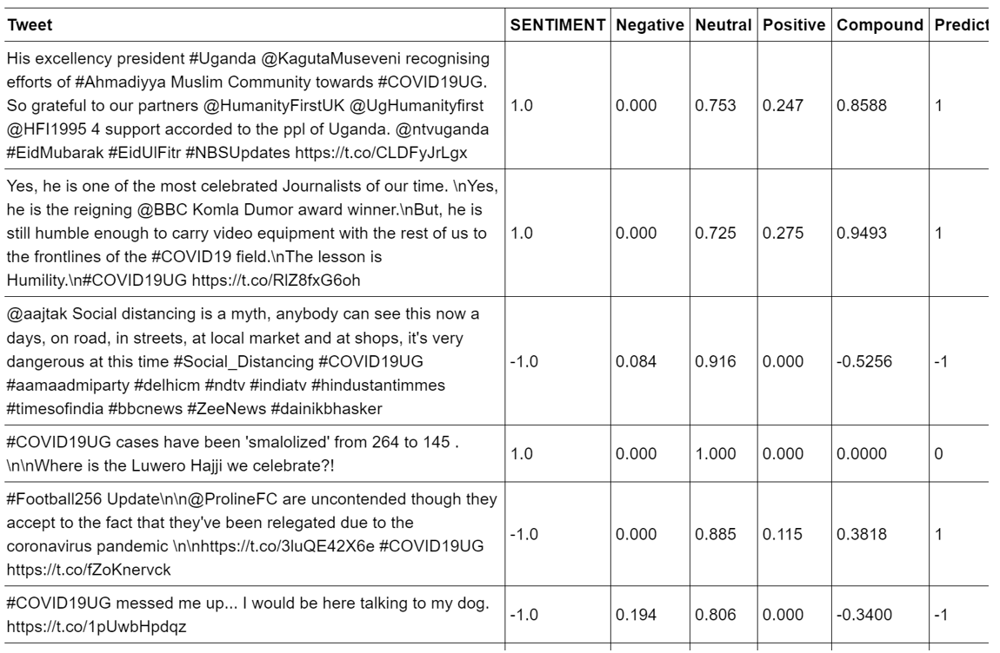
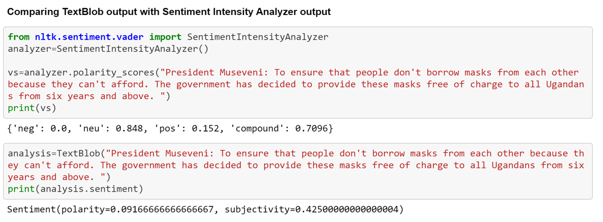
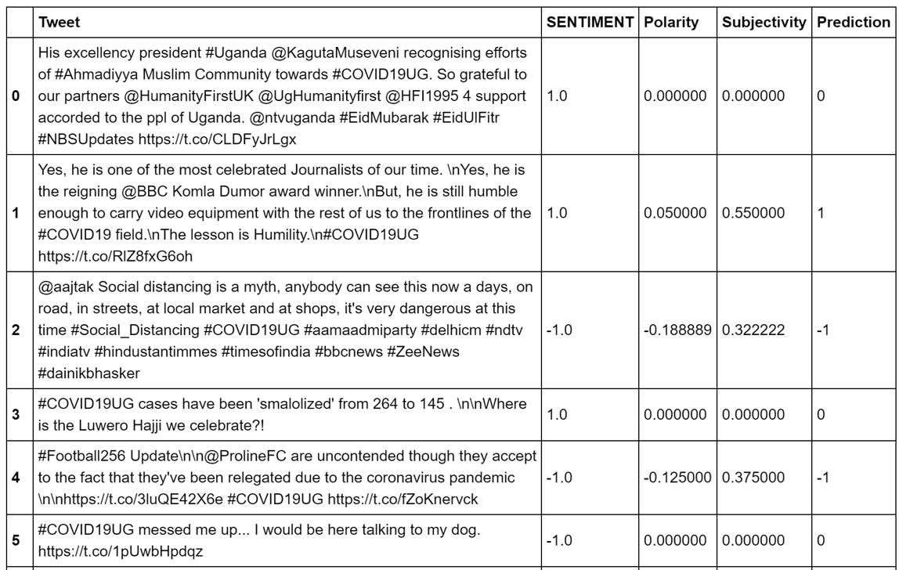
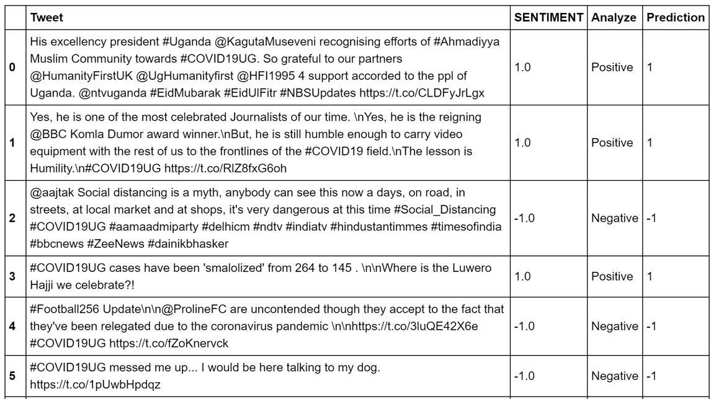

Review: Four Sentiment Analysis Methods in Python (1)
June 1, 2020 By Joyce Jiang

Sentiment analysis is a sub-division in the Natural Language Processing (NPL). In this review, we test four sentiment analytics tools, which are the most popular and common ones you could find online. There are some preexisting tools, designed for tracking public opinions, also provide the sentiment analysis functions, such as Brand24, Keyhole or even Google Trend. It is fully discretionary for users to choose between writing a Python script or using preexisting tools with a sentiment analysis function developed by data scientists. I personally feel more comfortable to use Python because I’m more familiar with the coding language and I prefer writing a code to exploring an unfamiliar dashboard.
Photo by visuals on Unsplash
The four tools we selected could be divided into supervised and unsupervised models. The supervised models include Sentiment Intensity Analyzer (SIA), TextBlob, and Natural Language Toolkit (NLTK). All these three models are commonly used in Data Scientist Tutorials and among beginner level of Python users. Though I identify them as SIA,TextBlob and NLTK, it is important to notice that we also need to import NLTK package to preprocess and clean the text before using SIA and TextBlob tools. NLTK is the most common natural language processor, which could be used for tokenization, stopword, lemmatization, etc.
For the unsupervised model, I used a combination of word2vec and K-means clustering analysis. This combination has frequently been used for conducting text categorization, sentiment analysis and other NLP analysis. Word2vec is a deep learning tool, designed for categorizing similar words based on their context. The fundamental of word2vec is that this algorithm can help you to vectorize a single word, i.e. representing a word in vector format:
“apple”: [1,5,0,4,7]
but word2vec would vectorize a word into hundreds of dimensions
Photo by KOBU Agency on Unsplash
How to understanding this?
The fundamental of word2vec has been explained by a lot of Youtubers and Bloggers in data science. For further readings, you can check it out What is word2vec? - Programming with Text
For simplicity, vectorizing a word means using vector to represent a word but at the same time retain the contextual information a word contains when you feed the model with the cleaned text/ dataset.
Word Vectorization
King – Male + Female = Queen
Cat + Cuteness = Kitten
What to expect?
For the simplistic of this tool exploration review, I would not go through the whole details of explaining the algorithms and fundamentals of NLP or sentiment analysis. In this review, I would like to focus on the comparison of these four sentimental analysis approaches in Python.
My data sample
I use the dataset I scraped from subjects related to COVID19 in Uganda on Twitter to test these models. There is no scientific reason for doing that. I chose Ugandan COVID19 topics because I was working on a communication research project with Whitehead Communication from Kampala, Uganda.
I tend to find a lot of Uglish (Ugandan English) and Swahili words in Tweets, which makes it super hard to give an accuracy or even meaning prediction. Additionally, there are so many satires, conflicted and mixed expression on Twitter, which became even challenging for us to do the labeling work manually, so you could image how difficult it would be for algorithms to give accurate prediction for those tweets.
Luckily, with the help of Anne Whitehead, I got 300 labeled tweets to test the accuracy of all these tools. If you are testing with English-only content or text will less satires and conflicted expression, such as IMDB movie reviews, and Yelp restaurant reviews, I am sure you will get a more accurate result than I had. I also find it generally useful if you start testing with those review datasets because they always contained the ratings given by customers. You do not need to label it manually, which is also a labor-intensive activity.
In my review, I will briefly explain each model in the order from the simplest to the most complex approach, compare their strength, weakness, and accuracy. I will also calculate an average score of all three supervised tools and adjust thresholds to see if I can further improve the accuracy. In my conclusion, I will select the one with the best performance, introduce the limitation in this review and recommend the other exploratory research directions and further readings.
Sentiment Intensity Analyzer (SIA) – Learn sentiment analysis in 5 minutes
SIA is a tool based on Vader library, which contains pre-labeled sentiment ratings for each word in this library. The words in Vader were almost randomly handpicked by people on Internet and scores were also labeled by the Internet people, so the scoring process was not automated by an algorithm. SIA is super easy to use. You can check out the Python script in my Jupyter Notebook. However, there isn’t a lot of information about SIA online.

Strength
Easy to use! Like I said, you can learn it in 5 minutes including appending results to a data frame. The only code you will need to run SIA is sia.polarity_scores(text) to get a result of polarity.
The measurement you can get from sia.polarity_scores function is negative, positive, neutral and compound. Although in most cases, people only use compound scores for labeling positive and negative sentiments, negative, positive, and neutral scores are handful when you want to set different thresholds to filter the valid results and enhance accuracy rates (of course, the number of sample data will decrease accordingly when you choose to do so).
Weakness
SIA gives prediction to sentiments based on the simple rule of averaging positive and negative scores received by words. When there are negation, satires (such as Twitter), complex or conflicted content in the document, SIA becomes unreliable. The overall accuracy score I got for testing this method is around 60%.
If you want to know more how it, you can check this tutorial on GitHub, or take a close look at my Jupyter Notebook. To know more about Vader library, you can check out this paper VADER: A Parsimonious Rule-based Model for Sentiment Analysis of Social Media Text.
TextBlob – As simply as SIA
TextBlob is based on a different library called pattern. Pattern is specifically designed for social media, which is supposed to be more specialized and accurate if you’re using it to analyze social media content. However, when I take a close look at what specific social media content is used during the labeling process, you might not think TextBlob is that reliable. The words in pattern is also handpicked but this time it’s based on the frequency of words in customer reviews. When using TextBlob for sentiment analysis, it does give very different results from SIA.

TextBlob calculate both the polarity and subjectivity scores of a document based on its intensity, which could also be found in TextBlob’s function list. It’s result calculation is similar to weighted average but is a more sophisticated one. I won’t go through the details, but you can find a reading about it TextBlob Sentiment: Calculating Polarity and Subjectivity.

Strength:
The tool is as simple as SIA, which means you only need to type textblob=TextBlob(text), followed by textblob.sentiment to get a result You can check out the Python script in my Jupyter Notebook. Differing from SIA which only gives polarity information for a document, TextBlob has other functions as well. Subjectivity is automatically there when you use the textblob.sentiment function. Similarly, subjectivity would also be handful when you went to set different thresholds to filter the predicted results.
Additionally, TextBlob also has translate, tags, intensity and many others function to process or preprocess the text, which makes it more capable than SIA. This video Sentiment Analysis in Python with TextBlob and VADER Sentiment to explore several TextBlob’s function.
Weakness
I personally don’t find it work effectively with Twitter sentiments. It has accuracy of 52% with my data, which is the lowest among all four approaches because it has similar weakness faced by SIA.
TextBlob could also use alternative word scores for sentiment analysis, which are the scores automated by NaiveBayesAnalyzer. With this tool, users can train and test TextBlob with contextual data, and subsequentially increasing its accuracy. Since I conducted a method with purely NLTK packages but have very similar rationale with using NaiveBayesAnalyzer, I will skip the introduction of this tool for simplicity.
If you want to know more about NaiveBayesAnalyzer or the comparison of SIA and TextBlob, you can check out this blog Sentiment Analysis Tools, or take a close look at my Jupyter Notebook. I also find this YouTube video Twitter Sentiment Analysis - Learn Python for Data Science very useful for beginners to conduct a code for sentiment analysis by using TextBlob.
Natural Language Toolkit (NLTK) – Hey, you can train algorithms with your own labeled dataset
NLTK is so popular that I will skip some of its introduction in this review. Generally, NLTK is useful for both entry level and advanced level users. It provides all packages that could be useful for preprocessing text, such as Stopwords, tokenization, lemmatization, etc. Though these functions could also be replaced by modules in TextBlob or other NLP tools, NLTK for me is always the place to start with.
My NLTK approach could be broken down into two part: training and executing. In the first part, I used a preexisting data sample Twitter_Sample in NLTK library because we don’t have enough time to label and create our own data sample for training and testing purposes. Usually, you would want to label your own samples so the NLTK model would be able to capture the contextual information in your dataset. However, my thought is that Twitter sample might be a good starting point for me to build a supervised model because I can easily test it on multiple datasets. The step-by-step illustration could be finding in my Jupyter Notebook

Strength
The strength of this method is its flexibility and slightly higher accuracy. This time I received the highest accuracy among all supervised methods. All my supervised methods using either preexisting word libraries or preexisting labeled data samples to run the test models, so practically speaking their all need sample level of effort in conducting the sentiment analysis.
I got 65% for accuracy when I used preexisting data sample from NLTK, if you have the luxury to train the model with you own labeled data, I’m sure you will receive a higher accuracy than mine.
Weakness
It’s slightly more complicated as compared to SIA and TextBlob and may requires more skills to be able to digest it’s code. If you decide to go with you own labeled dataset, you might need to label 1000-2500 pieces of text (for tweets) to get a reliable model.
My NLTK script was inspired by this reading How To Perform Sentiment Analysis in Python 3 Using the Natural Language Toolkit (NLTK) by Shaumik Daityari, and you can also check out both my step-by-step and cleaned versions of Jupyter Notebook scripts on GitHub.
This article covers the review of three supervised methods in sentiment analysis. You can check out the reading of unsupervised method word2vec + K-means cluster at